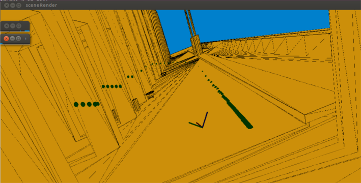
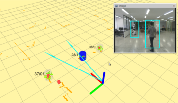
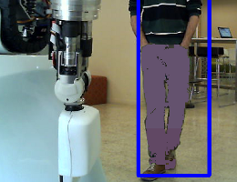
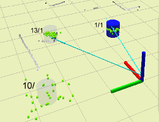
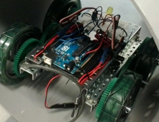

At Beta Robots we benefit daily from the open source community. Therefore, we would like to contribute back, as far as possible, with public releases of our work under appropriate licenses. These releases can be found at our organization on
In particular, there are two projects that have a dedicated open software repository:

FaRaMoTics Fast Ranging Models for roboTics is a software library dedicated to fast computation of range measurement models in 3D environments.
FaRaMoTics Fast Ranging Models for roboTics is a software library dedicated to fast computation of range measurement models in 3D environments.

Pipol Tracker Multi-target people tracker for mobile robots, based on particle filtering. ROS integrated.
Pipol Tracker Multi-target people tracker for mobile robots, based on particle filtering. ROS integrated.
Three general purpose repositories are also public under FreeBSD License:
|  |  |  |
| btr-libs repository is a set of C++ libraries related to perception and robotics. | btr-ros-pkg repository is a set of ROS wrappers to some of our btr-libs modules. | btr-ino repository is a collection of arduino samples with HW sketches. |
-
 info(at)beta-robots.com
info(at)beta-robots.com
-
@btRobots